Pico Pong
A handheld Pong console on my own PCB, from the first schematic to the finished console.
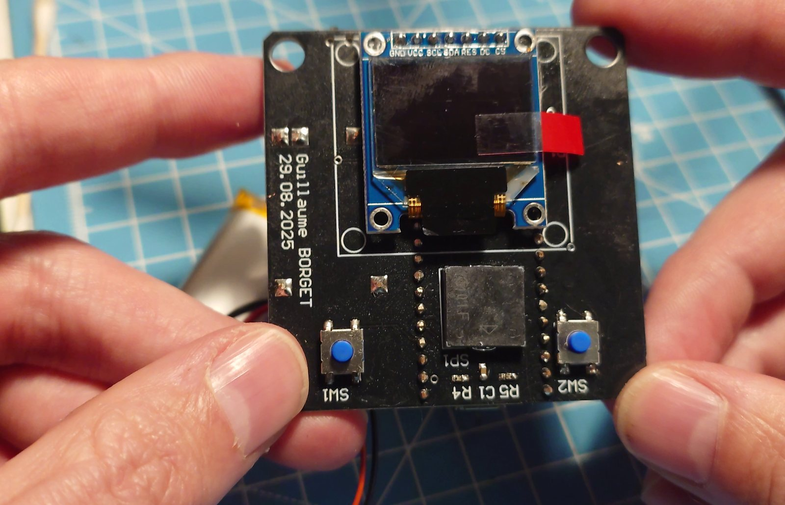
I wanted a small project that goes through the whole hardware cycle on my own: choosing the parts, drawing the schematic, laying out and ordering a PCB, soldering it and writing the firmware. A Pong console was a good size for that: a microcontroller, a screen, two buttons, a buzzer and a battery to manage.
| MCU | Raspberry Pi Pico (RP2040) |
|---|---|
| Display | 0.95" SSD1331 colour OLED, 96×64, SPI |
| Inputs | 2 tact switches with 10 kΩ pull-ups |
| Sound | Murata piezo, 4 kHz, driven by an MMBT3904 NPN |
| Power | 3.7 V Li-ion cell, TP4056 USB charger, slide switch on VSYS |
| PCB | 2 layers, ground pour, 6–8 mil signals, 20 mil power, 10 mil clearance |
-
24 Aug 2025
Choosing the parts
The Pico for its SDK, its GPIOs and its two SPI ports. An SPI display rather than I²C to get a faster refresh for the animation. A Li-ion cell with a TP4056 module so the console charges on USB, and a slide switch in series with VSYS to cut the battery. The piezo was picked for its 4 kHz resonance so a simple square wave is loud enough.
-
24 – 26 Aug 2025
Schematic
Drawn in CircuitMaker. The TP4056 module was not in the library, so I made its symbol and footprint from the module dimensions.
- NPN driver for the piezo (4.7 kΩ base, 100 kΩ pull-down) so the GPIO doesn't supply the current
- 10 kΩ pull-ups on the buttons
- Decoupling: 100 nF and 1 µF ceramics, 4.7 µF and 22 µF tantalums on VSYS and 3V3
- Power LED and test points on VBUS, VSYS, 3V3, BUZZ, both buttons and GND
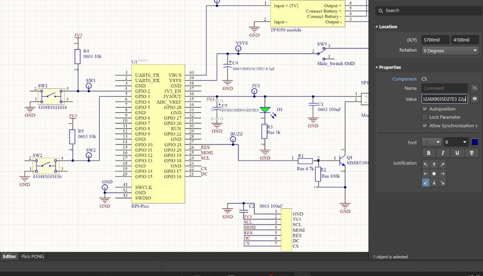
The schematic growing over three evenings. -
27 – 28 Aug 2025
Layout
Board outline sized around the display and the Pico. Components placed first, then routing on two layers, with wider tracks for VSYS and 3V3 and a ground pour. The decoupling capacitors sit next to the pins they filter and the SPI lines are kept short. Design rules checked with DRC until there was no violation left.
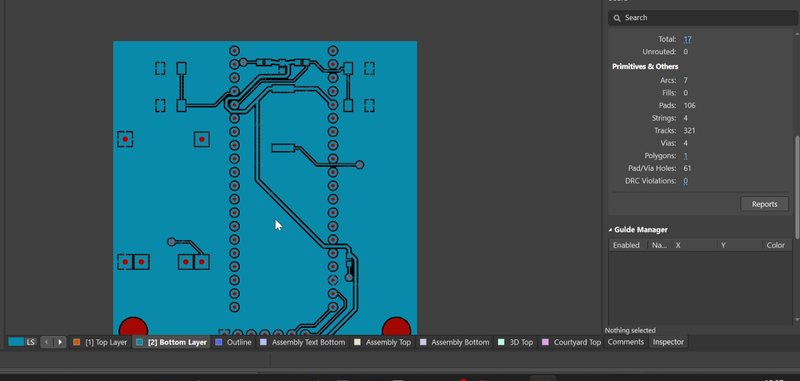
From the ratsnest to the ground pour. 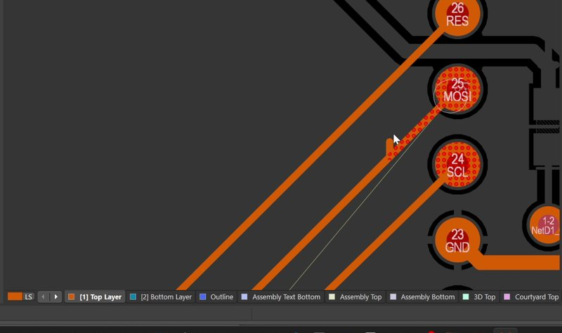
Routing, closer. -
28 – 29 Aug 2025
3D check and order
Before ordering, I went through the 3D view to check the position of the charger module, the USB connectors and the mounting holes. Gerbers and drill files exported and sent to JLCPCB (available on request).
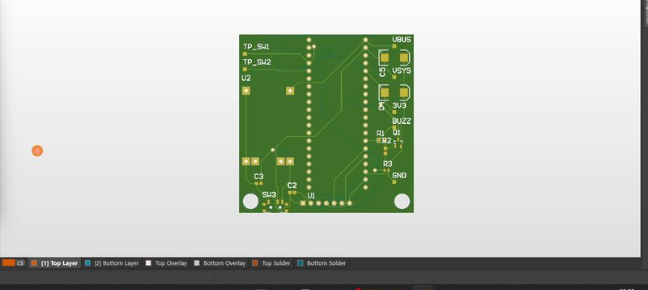
3D view in CircuitMaker. -
8 – 9 Feb 2026
Assembly
Everything soldered by hand with the iron: the tantalum capacitors, the 0603 passives, the SOT-23 transistor, the buttons, then the Pico and the charger module. Flux cleaned off once the board was done.
Then the battery: wires to the TP4056 module, heat shrink on the joints, and the first power-up with the power LED on.
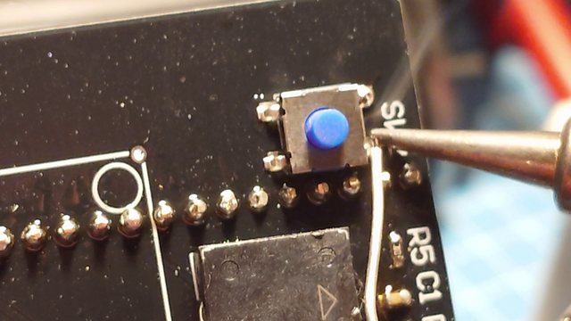
Tantalum caps, Pico, buttons. 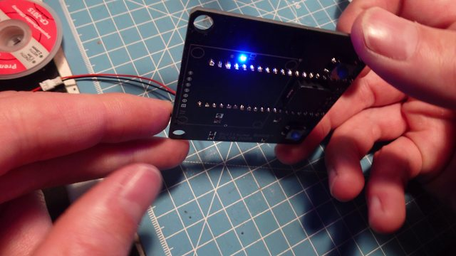
Battery wiring and first power-up. -
Nov 2025 – Feb 2026
Firmware
In C with the Pico SDK, without external library. I first checked the toolchain with a blink, then wrote a small driver for the SSD1331. Instead of sending the whole frame buffer, it uses the controller's own rectangle and clear commands, so each frame only redraws the ball and the paddle. The buzzer runs on a PWM slice at 4 kHz.
On the first run the game logic worked, but the screen was never cleared: the clear command was cut by the next command sent too early, and the rectangles were drawn without the fill mode. The ball drew its path over random pixels. Fixed by waiting 1 ms after the clear and enabling the fill mode before each rectangle.
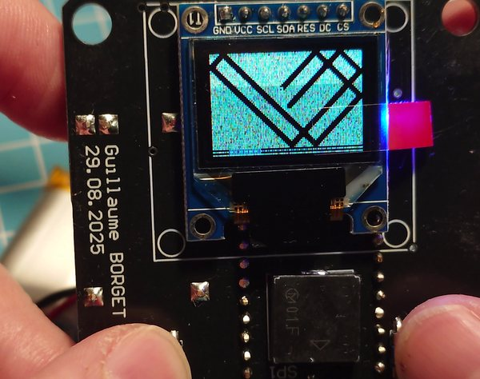
First run, 9 Feb 2026: the bug before the fix. //filled rectangle drawn by the controller void draw_rect(uint8_t x, uint8_t y, uint8_t w, uint8_t h, uint16_t color) { ssd1331_write_cmd(0x26); //fill enable ssd1331_write_cmd(0x01); ssd1331_write_cmd(0x22); //draw rectangle ssd1331_write_cmd(x); ssd1331_write_cmd(y); ssd1331_write_cmd(x + w - 1); ssd1331_write_cmd(y + h - 1); //RGB565 -> 6 bits per channel ssd1331_write_cmd((color >> 11) << 1); ssd1331_write_cmd((color >> 5) & 0x3F); ssd1331_write_cmd((color & 0x1F) << 1); ... }
-
Sep 2026
Enclosure
To turn the board into a real handheld, I designed a case in Fusion 360 around the PCB dimensions and printed it on my Bambu Lab A1 mini.
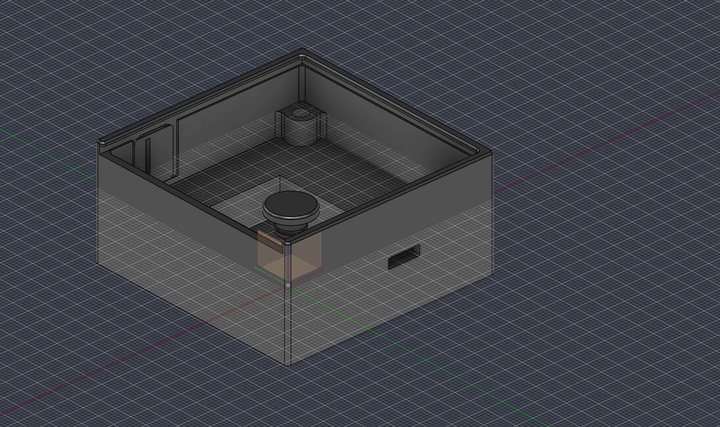
The design history replayed in Fusion 360. 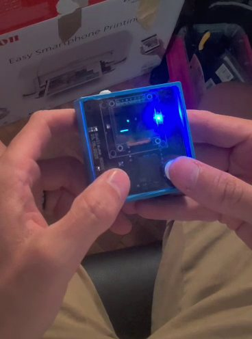
The console in its case.
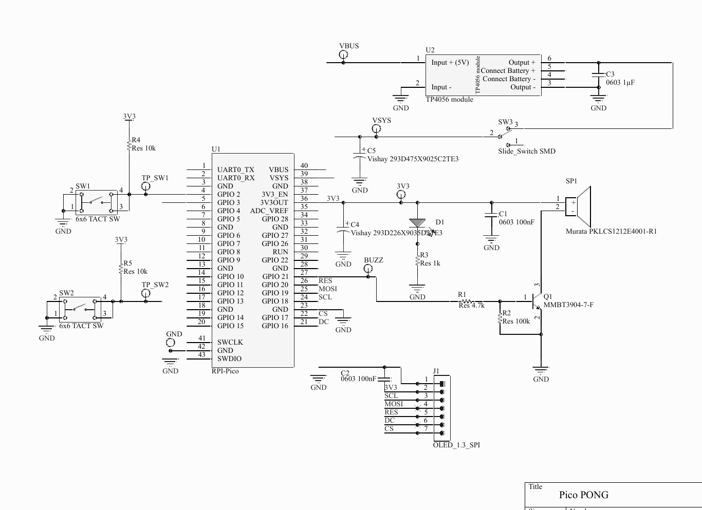
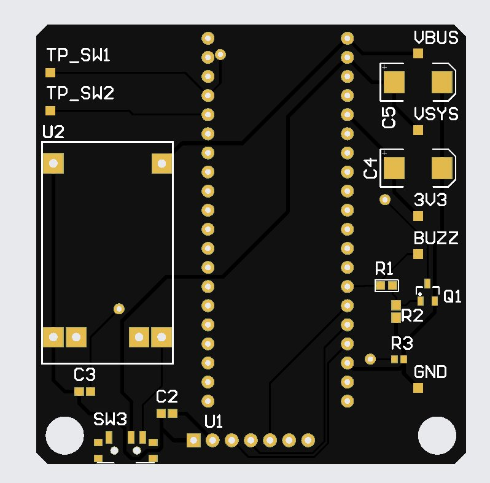
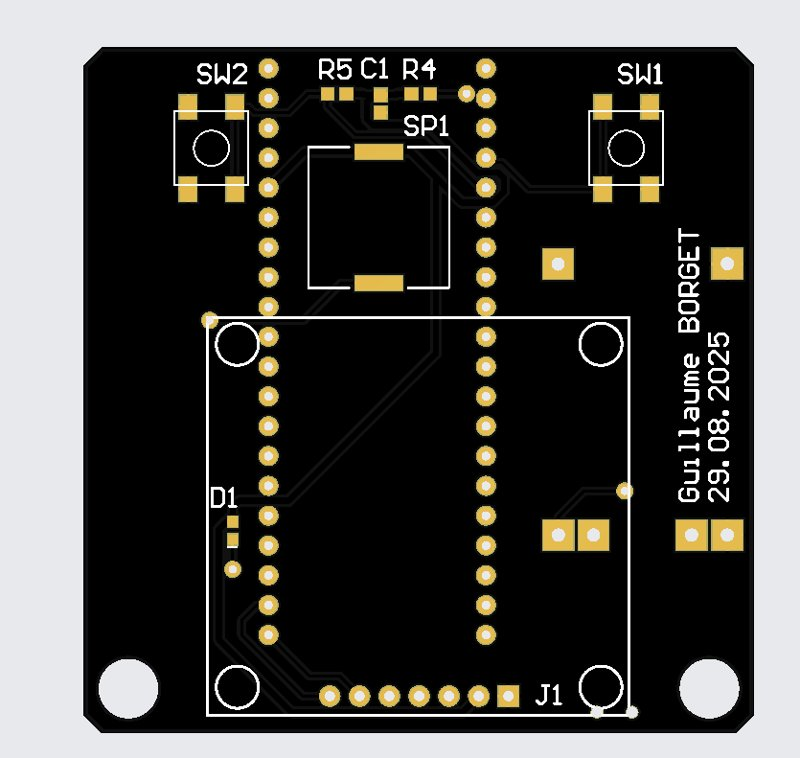
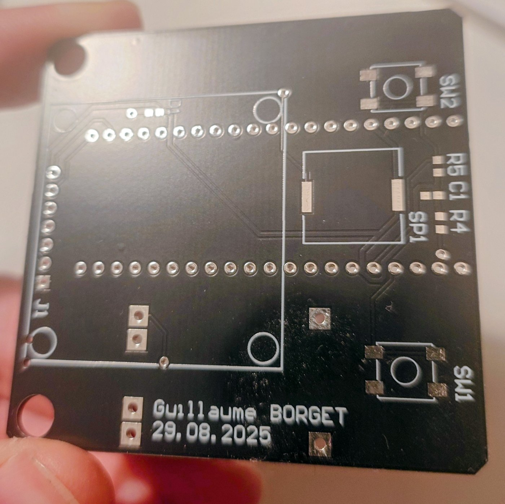
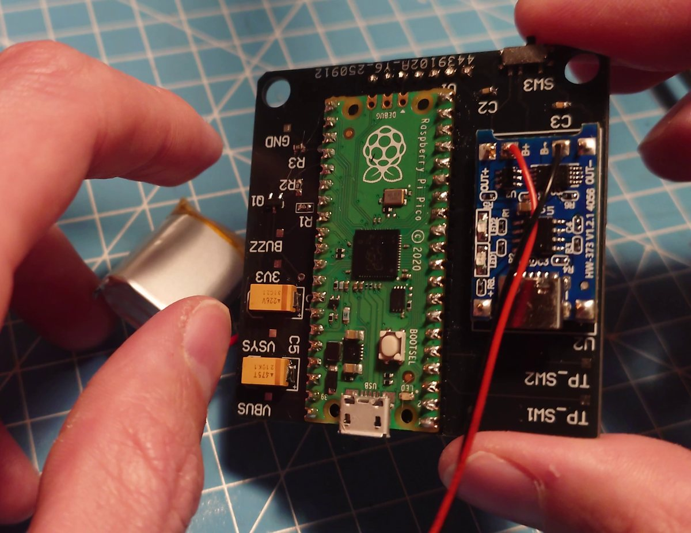
I kept the documentation close to what I know from aerospace (DO-254 / DO-178C): a system specification with numbered requirements, a development plan, and a test plan with a traceability matrix linking each requirement to its test.
Next- Debounce the buttons
- Show the score on screen
- Sleep mode to save the battery